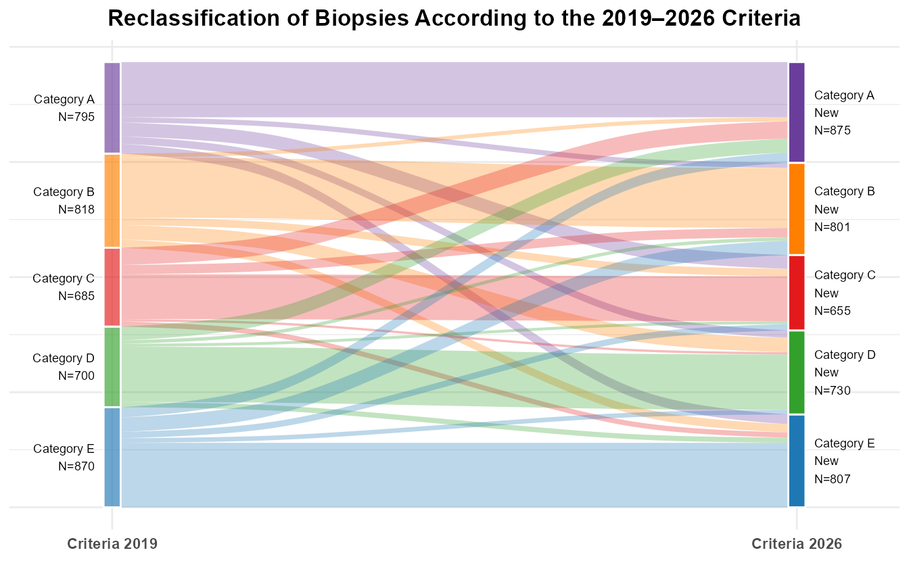
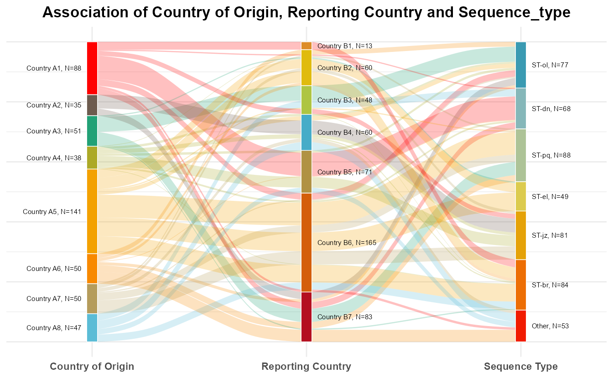
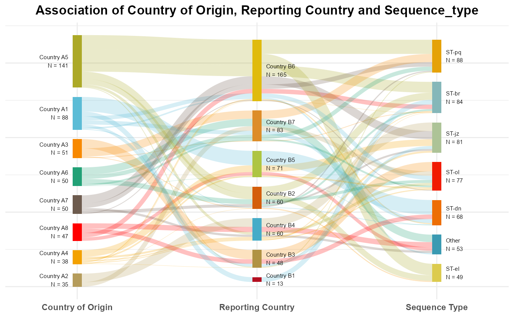

library(tidyverse)
library(ggalluvial)Warning: 程序包'ggalluvial'是用R版本4.6.1 来建造的library(ggsankeyfier)Warning: 程序包'ggsankeyfier'是用R版本4.6.1 来建造的我们来看两个典型研究场景：
场景一：某生物检测项目中，样本依据旧版指南分为5个类型。指南更新后，部分原先归属为A型的样本，按照新的标准被重新划分为C型，其余类别也发生了类似的调整。如何直观地展示分类发生变化的样本以及它们分别流向哪些新的类别？
场景二：一项国际流行病学研究观察了500例破伤风梭菌感染的患者，需要在同一张图中同时展示患者来自哪个国家、在哪个国家被诊断以及菌株分型，如何清晰地展示患者的流动情况？
面对这一类可视化需求，冲积图正是合适的工具。
冲积图（Alluvial Diagram）由Rosvall等人在2010年发表的《Mapping change in large networks》一文中正式提出1，此后被广泛应用于多个领域。除了以上提到的场景外，在队列研究中，冲积图还可用于展示同一批患者从基线、治疗到结局的转归路径。
在日常工作中，我们也习惯性地称其为桑基图（Sankey Diagram），但两者是有差别的。 桑基图以爱尔兰裔英国工程师Riall Sankey的名字命名，他于1898年在论文中首次使用这种图来分析蒸汽机的热效率2，此后被广泛应用于描绘复杂系统的能量与物质平衡。它通常关注能量的流动及其向不同来源或汇点的分配情况，通过箭头表示，箭头的粗细则代表能量流动的量3。因此，桑基图关注能量/物质的流动（包括损耗），总流量可以逐级减少；而冲积图则更强调同一研究对象在不同维度的分组归属，各维度下研究对象的总数不变。
冲积图用于展示同一批研究对象在多个分类维度下的分组变迁，由三个基本元素构成：
ggalluvial是目前绘制冲积图最经典的R包，在临床研究中应用广泛、投稿接受度高，大多数场景下使用它就可以了。此外，2024年上线的ggsankeyfier包也值得关注，它支持跨阶段流动，可以灵活调整节点间距，在布局自定义方面具有一定的优势。
本文通过两个实例演示如何绘制冲积图。使用ggalluvial包绘制两阶段与三阶段冲积图，对三阶段冲积图同时使用ggsankeyfier包绘制，以直观对比两个包的图形效果。
加载必要的包：
library(tidyverse)
library(ggalluvial)Warning: 程序包'ggalluvial'是用R版本4.6.1 来建造的library(ggsankeyfier)Warning: 程序包'ggsankeyfier'是用R版本4.6.1 来建造的本例使用模拟数据如 Table 5.1 所示，数据记录了3868份生物样本在新旧两版指南分类标准下的归属与流转情况，其中class_19和class_26是分类标准，value是样本数量。
| class_19 | class_26 | value |
|---|---|---|
| Category A | Category A New | 480 |
| Category A | Category B New | 45 |
| Category A | Category C New | 120 |
| Category A | Category D New | 65 |
| Category A | Category E New | 85 |
| Category B | Category A New | 35 |
| Category B | Category B New | 521 |
| Category B | Category C New | 65 |
| Category B | Category D New | 125 |
| Category B | Category E New | 72 |
接下来执行绘图代码，生成的冲积图如 Figure 5.1 所示。
p <- df_alluvial |> ggplot(aes(axis1 = class_19, axis2 = class_26, y = value)) +
geom_alluvium(
aes(fill = class_19),
width = 0.025,
alpha = 0.3,
knot.pos = 0.25
) +
geom_stratum(
fill = c(rep(brewer.pal(10, "Paired")[seq(2, 10, by = 2)], 2)),
width = 0.025,
color = "white",
alpha = c(rep(0.5, 5), rep(1, 5)),
linewidth = 0.5
) +
geom_text(
stat = "stratum",
aes(
label = str_c(after_stat(stratum), "\nN=", after_stat(count)),
color = if_else(after_stat(x) == 1, "black", "black")
),
size = 2.4,
nudge_x = c(rep(-0.025, length(unique(df_alluvial$class_19))), rep(0.025, length(unique(df_alluvial$class_26)))),
hjust = c(rep(1, length(unique(df_alluvial$class_19))), rep(0, length(unique(df_alluvial$class_26))))
) +
scale_color_identity() + #label使用color本身的颜色
scale_fill_manual(values = brewer.pal(10, "Paired")[seq(10, 1, by = -2)]) +
scale_x_discrete(
limits = c("class_19", "class_26"),
labels = c("Criteria 2019", "Criteria 2026"),
expand = c(0.15, 0)
) +
labs(title = "Reclassification of Biopsies According to the 2019–2026 Criteria", y = NULL) +
theme_minimal(base_size = 10.5) +
theme(
legend.position = "none",
plot.title = element_text(face = "bold", hjust = 0.5),
axis.text.y = element_blank(),
axis.text.x = element_text(face = "bold")
)
print(p)
本例使用的模拟数据如Table 5.2所示。数据记录了500例患者来自哪个国家（country_of_origin）、在哪个国家被诊断（reporting_country）以及菌株分型（sequence_type），number为患者数。
| country_of_origin | reporting_country | sequence_type | number |
|---|---|---|---|
| Country A6 | Country B2 | ST-ol | 8 |
| Country A3 | Country B3 | ST-ol | 25 |
| Country A4 | Country B4 | ST-ol | 3 |
| Country A5 | Country B4 | ST-ol | 7 |
| Country A4 | Country B5 | ST-ol | 4 |
| Country A1 | Country B6 | ST-ol | 11 |
| Country A7 | Country B6 | ST-ol | 2 |
| Country A2 | Country B7 | ST-ol | 12 |
| Country A6 | Country B7 | ST-ol | 5 |
| Country A1 | Country B2 | ST-dn | 2 |
接下来我们分别使用ggalluvial包和ggsankeyfier包绘图。
由于变量country_of_origin、reporting_country 和 sequence_type均为字符型，因此绘图前我们需要先将其转换为因子类型并调整其水平，以控制图中的显示顺序。
df_alluvial <- df |>
mutate(
across(1:3, as_factor),
country_of_origin = fct_relevel(country_of_origin, c("Country A1", "Country A2", "Country A3", "Country A4", "Country A5", "Country A6", "Country A7", "Country A8")),
reporting_country = fct_relevel(reporting_country, c("Country B1", "Country B2", "Country B3", "Country B4", "Country B5", "Country B6", "Country B7")),
sequence_type = fct_relevel(sequence_type, c("ST-ol", "ST-dn", "ST-pq", "ST-el", "ST-jz", "ST-br", "Other"))
)然后运行以下代码绘图，生成的冲积图如Figure 5.2所示。
p <- df_alluvial |>
ggplot(
aes(
axis1 = country_of_origin,
axis2 = reporting_country,
axis3 = sequence_type,
y = number
)
) +
geom_alluvium(
aes(fill = country_of_origin),
width = 0.05,
alpha = 0.25,
knot.pos = 0.25
) +
scale_fill_manual(
name = "Country of Origin",
values = wesanderson::wes_palette("Darjeeling1", n = length(unique(df_alluvial$country_of_origin)), type = "continuous")
) +
ggnewscale::new_scale_fill() +
geom_stratum(
aes(fill = interaction(after_stat(x), after_stat(stratum), sep = "_")),
width = 0.05,
color = "white",
linewidth = 0.25
) +
scale_fill_manual(
values = c(
wesanderson::wes_palette("Darjeeling1", n = length(unique(df_alluvial$country_of_origin)), type = "continuous"),
wesanderson::wes_palette("FantasticFox1", n = length(unique(df_alluvial$reporting_country)), type = "continuous"),
wesanderson::wes_palette("Zissou1", n = length(unique(df_alluvial$sequence_type)), type = "continuous")
),
guide = "none"
) +
geom_text(
stat = "stratum",
aes(
label = str_c(after_stat(stratum), ", N=", after_stat(count)),
nudge_x = after_stat(ifelse(x == 1, -0.05, 0.05)),
hjust = after_stat(ifelse(x == 1, 1, 0))
),
size = 2,
) +
scale_x_discrete(
limits = c("country_of_origin", "reporting_country", "sequence_type"),
labels = c("Country of Origin", "Reporting Country", "Sequence Type"),
expand = c(0.2, 0)
) +
labs(
title = str_wrap("Association of Country of Origin, Reporting Country and Sequence_type", width = 70),
y = NULL
) +
theme_minimal(base_size = 10.5) +
theme(
legend.position = "none",
plot.title = element_text(face = "bold", hjust = 0.5),
axis.text.x = element_text(face = "bold"),
axis.text.y = element_blank(),
)
print(p)
正式绘图前我们同样需要对数据进行处理。除了将以上提到的三个变量转换为因子类型并调整其水平外，还需要按照ggsankeyfier的要求将数据转换为长格式，如Table 5.3所示。
df_sankey <- df |>
mutate(
across(1:3, as_factor),
country_of_origin = fct_relevel(country_of_origin, rev(c("Country A1", "Country A2", "Country A3", "Country A4", "Country A5", "Country A6", "Country A7", "Country A8"))),
reporting_country = fct_relevel(reporting_country, rev(c("Country B1", "Country B2", "Country B3", "Country B4", "Country B5", "Country B6", "Country B7"))),
sequence_type = fct_relevel(sequence_type, rev(c("ST-ol", "ST-dn", "ST-pq", "ST-el", "ST-jz", "ST-br", "Other")))
) |>
pivot_stages_longer(
stages_from = c("country_of_origin", "reporting_country", "sequence_type"),
values_from = "number",
additional_aes_from = c("country_of_origin", "reporting_country", "sequence_type")
)| country_of_origin | reporting_country | sequence_type | number | edge_id | connector | node | stage |
|---|---|---|---|---|---|---|---|
| Country A8 | Country B6 | ST-br | 12 | 1 | from | Country A8 | country_of_origin |
| Country A8 | Country B6 | ST-br | 12 | 1 | to | Country B6 | reporting_country |
| Country A8 | Country B5 | Other | 9 | 2 | from | Country A8 | country_of_origin |
| Country A8 | Country B5 | Other | 9 | 2 | to | Country B5 | reporting_country |
| Country A8 | Country B4 | Other | 14 | 3 | from | Country A8 | country_of_origin |
| Country A8 | Country B4 | Other | 14 | 3 | to | Country B4 | reporting_country |
| Country A8 | Country B3 | ST-dn | 12 | 4 | from | Country A8 | country_of_origin |
| Country A8 | Country B3 | ST-dn | 12 | 4 | to | Country B3 | reporting_country |
| Country A7 | Country B6 | ST-jz | 22 | 5 | from | Country A7 | country_of_origin |
| Country A7 | Country B6 | ST-jz | 22 | 5 | to | Country B6 | reporting_country |
完成数据处理后就可以运行以下代码绘图啦，最终生成的冲积图如Figure 5.3所示。
# 绘图
pos_main <- position_sankey(v_space = "auto", width = 0.05, align = "center")
pos_text_left <- position_sankey(v_space = "auto", nudge_x = -0.05, align = "center")
pos_text_right <- position_sankey(v_space = "auto", nudge_x = 0.05, align = "center")
p <- df_sankey |>
ggplot(aes(x = stage, y = number, group = node, connector = connector, edge_id = edge_id)) +
geom_sankeyedge(
aes(fill = country_of_origin),
position = pos_main,
alpha = 0.5
) +
geom_sankeynode(
aes(fill = node),
position = pos_main
) +
geom_text(
stat = "sankeynode",
aes(
label = after_stat(if_else(x == 1, sprintf("%s\nN = %d", node, node_size), "")),
node = node, #忽略警告即可
),
position = pos_text_left,
hjust = 1,
size = 2
) +
geom_text(
stat = "sankeynode",
aes(
label = after_stat(if_else(x %in% c(2, 3), sprintf("%s\nN = %d", node, node_size), "")),
node = node, #忽略警告即可
),
position = pos_text_right,
hjust = 0,
size = 2
) +
scale_fill_manual(
values = c(
wesanderson::wes_palette("Darjeeling1", n = length(unique(df_sankey$country_of_origin)), type = "continuous"),
wesanderson::wes_palette("FantasticFox1", n = length(unique(df_sankey$reporting_country)), type = "continuous"),
wesanderson::wes_palette("Zissou1", n = length(unique(df_sankey$sequence_type)), type = "continuous")
),
# values = c(rev(brewer.pal(8, "Set1")), rev(brewer.pal(7, "Set2")), rev(brewer.pal(7, "Set3"))),
guide = "none"
) +
scale_x_discrete(
limits = c("country_of_origin", "reporting_country", "sequence_type"),
labels = c("Country of Origin", "Reporting Country", "Sequence Type"),
expand = c(0.2, 0)
) +
labs(
title = str_wrap("Association of Country of Origin, Reporting Country and Sequence_type", width = 70),
fill = "Country of Origin"
) +
theme_minimal(base_size = 10.5) +
theme(
legend.position = "none",
plot.title = element_text(face = "bold", hjust = 0.5),
axis.title = element_blank(),
axis.text.y = element_blank(),
axis.text.x = element_text(face = "bold")
)
print(p)